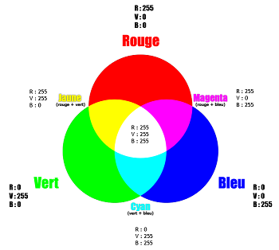

Le codage RVB
Ce système, basé sur la synthèse additive des couleurs, représente chacune d'entre elles par ses niveaux de rouge, vert et bleu. Chacun de ces niveaux est codé par un nombre allant de 0 à 255.
Le système de codage RVB est très bien adapté aux périphériques d'image tels que les écrans d'ordinateurs ou de téléviseurs. En effet, les valeurs des composantes Rouge, Verte et Bleue déterminent directement l'intensité du faisceau d'électrons qui parcourt la surface photosensible du moniteur.
